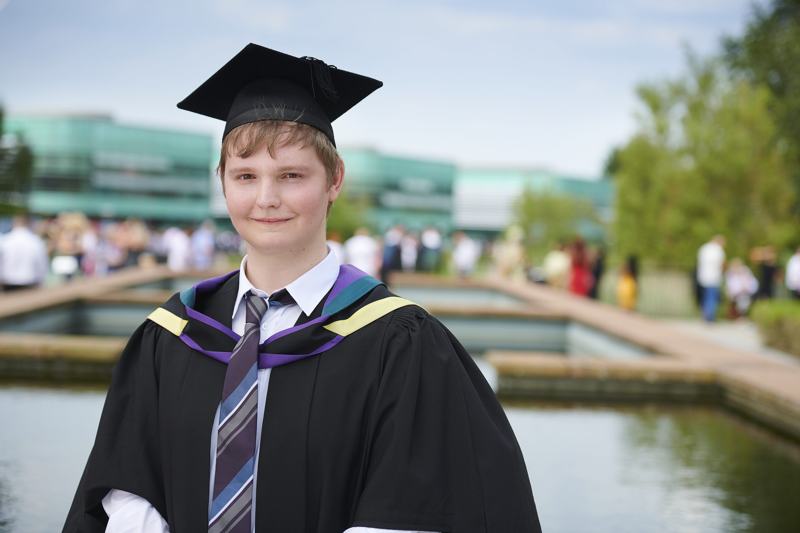

Edge Hill University student Zachary Wharton who shot to fame through his work with Robbie the Robot has graduated with a First Class Honours in MComp Computing. During his four years of study Zach has been involved in many different research projects including the University’s much-loved Robbie the Robot. Zach was part of the team who taught Robbie to become a soap fan and spot the signs of dementia by watching episodes of Emmerdale. This research attracted media attention around the world and saw Zach quoted and interviewed alongside his lecturer Ardhendu Behera. Kendal-born Zack, said:
Kendal-born Zack, said:
“I’ve loved the last four years and it’s been fantastic to take on extra internship research opportunities through Ardhendu. He’s very supportive and encourages me to develop my skills. “The work with Robbie and our project ‘Human Activity Behaviour Understanding: Dimensions of Human-Robot Social Interaction’ not only attracted media attention but also allowed me to present at prestigious IEEE Computer Conferences and write for journals. "
He added:
“Our current research is on Intelligent Transportation Systems and how self-driving, intelligent cars might soon be able to predict driver distraction.”
Zach will now continue his research with Ardhendu studying a Masters in Research (MRes) within Edge Hill’s Computer Science department.